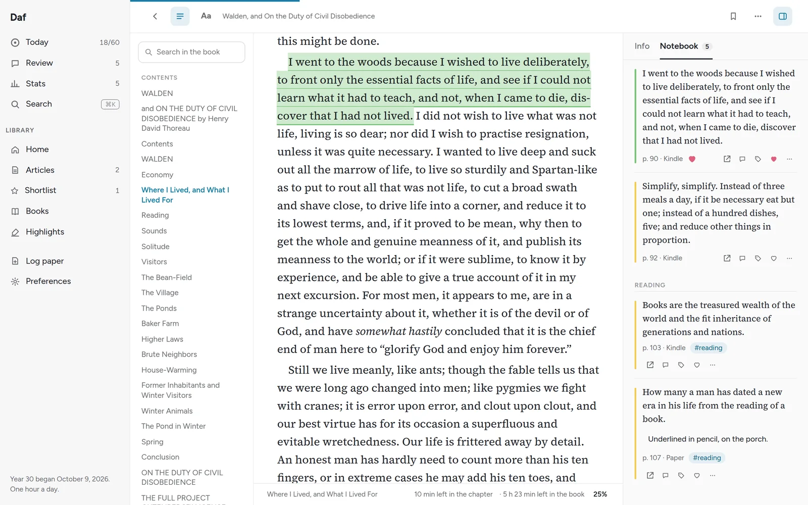
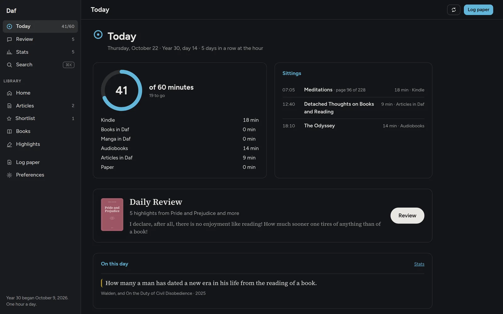
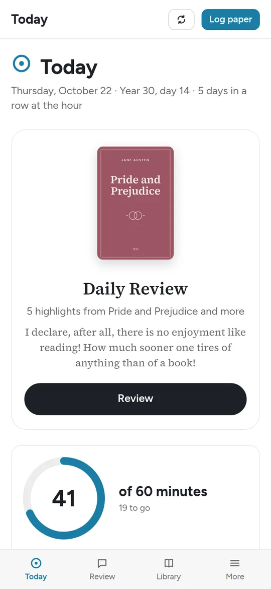
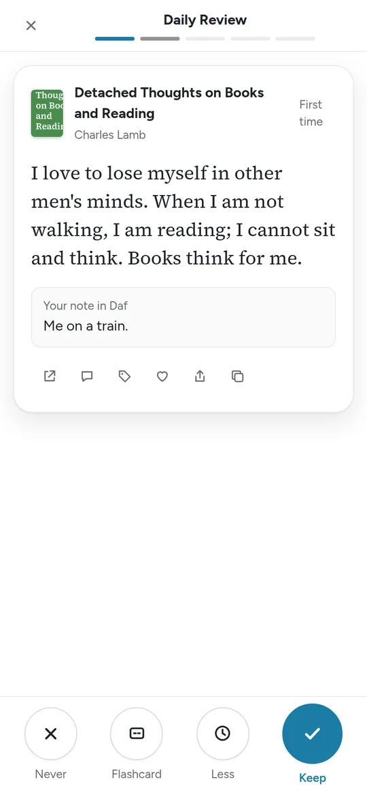
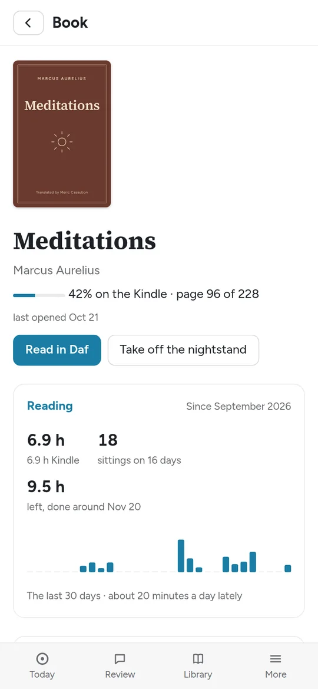
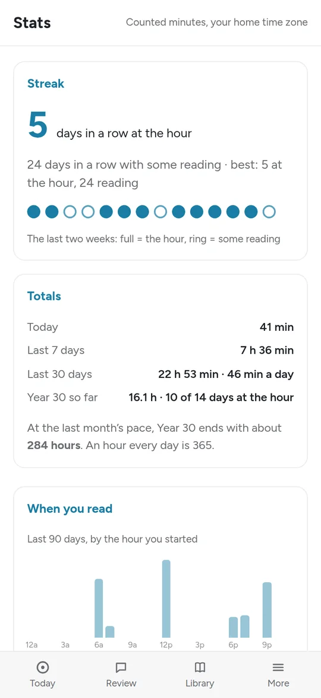

Dafan hour of reading a day
Dafan hour of reading a day
Every minute I read, in one ring
I gave myself one goal for a year: read for an hour every day. Daf is the app I built for it. It adds up the minutes from everywhere I read, the Kindle, audiobooks, paper books and its own reader, into one ring, and every morning it brings a few of my highlights back so what I read stays with me.
This is the real app, running in your browser on a little sample library: four old books from Project Gutenberg, three essays about reading, and a made-up reader’s year. Everything you do here stays in this browser.
- Pick up where the Kindle left off. Open Books, then Meditations, and press Read in Daf. The Kindle is further along, so Daf offers to take you there.
- Highlight something. Select a sentence in a book or an essay. Change its color, add a note, and find it again under Highlights.
- Do the daily review. Five highlights: Keep, Less or Never, and the ones you keep come back in a few days.
- Fill the ring. Read for a few minutes, or press Log paper, and watch Today catch up.
From the full app






What the full app does
It counts the hour. The Kindle sends its page turns through a small KOReader plugin, audiobooks come in from Audiobookshelf, paper books get logged with a button or a text message, and books and articles count while they’re open in Daf. Today shows the ring, every sitting, the week, and the whole year as a grid.
It’s a reader. Every book in my Calibre library opens in Daf’s own reader, with seventeen themes and two dozen typefaces. The Library keeps what I save from the web, the Feed is my RSS, and there’s a Torah shelf with the week’s parasha in Hebrew and English.
The highlights come back. The Kindle’s highlights, the ones I make in Daf or on web pages, and photos of pages I marked in pencil all land in ONE place, open at the exact spot, and go into my Obsidian notes. Five come back every morning, and the ones I keep return less and less often.
It goes where I read. There’s a Mac app with today’s minutes in the menu bar, an Android app with a home-screen widget, a browser extension for highlighting web pages, and the review and today’s minutes show up on the Kindle too.
What needs my server isn’t in the demo: the Kindle and audiobook sync, the Feed, the Torah shelf, Claude’s summaries and answers, read-aloud, and signing in.
Running your own
The real Daf runs on my own server and reads my own library, so I can’t open it up to everyone, but all of its code is on GitHub. It’s one Python program with one SQLite file, plus a web app with no build step. I built it around the services I already run, so a copy of your own means pointing it at yours, and the docs are honest about where that takes some editing. It’s free software under the GPL.